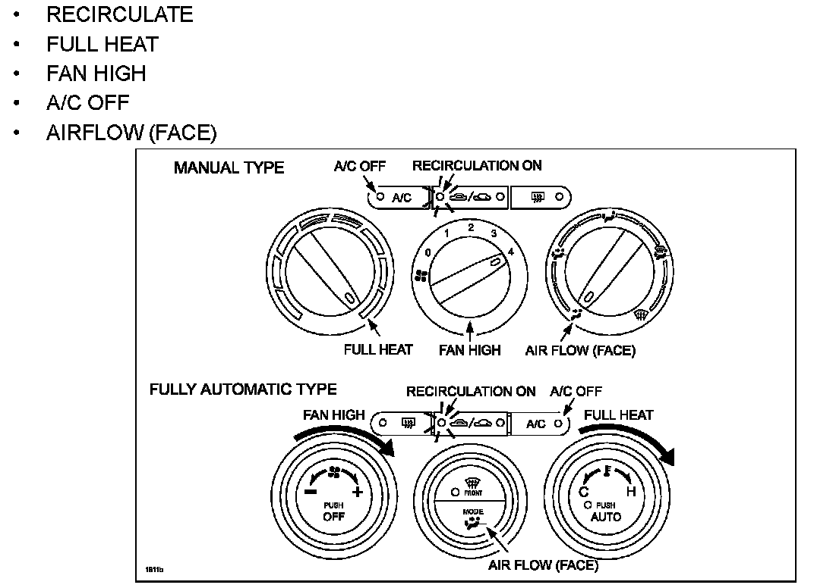
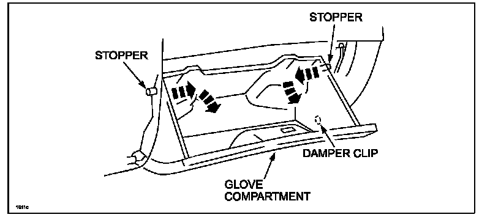
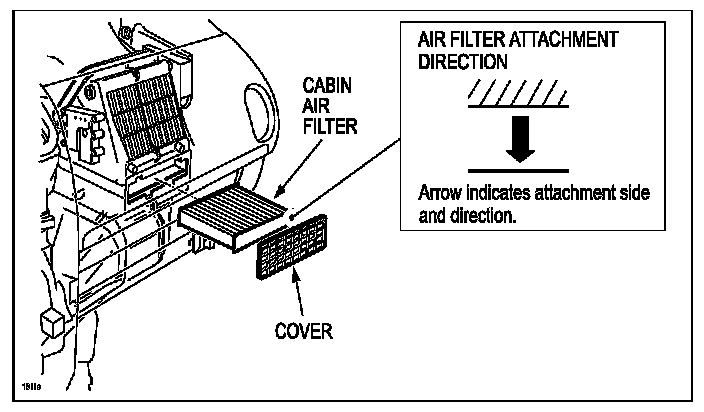
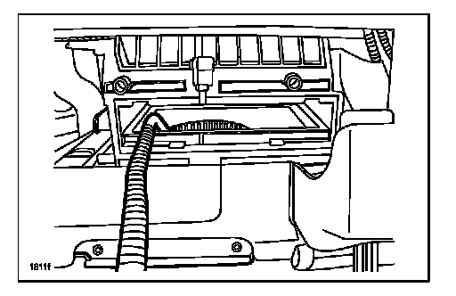

2003-2008 MAZDA6
2003-2008 Mazda61. Dry the evaporator using the following procedure:
WARNING:
Running the engine inside an enclosed area, such as a garage, is dangerous. Exhaust gas, which contains poisonous carbon monoxide, could easily enter the cabin. Loss of consciousness or even death could occur. Don't run the engine when inside an enclosed area.
A. Start the engine.

B. Set the HVAC controls as follows.
^ RECIRCULATE
^ FULL HEAT
^ FAN HIGH
^ A/C OFF
^ AIRFLOW (FACE)
C. Open one window approximately one half inch.
D. Let the engine run for 15 minutes.
2. Remove the glove box by:

A. Removing the damper clip.
B. Bending the stoppers inward to remove.

C. Opening the lid until it is completely horizontal and remove the lid by pulling it in the direction of the arrow.
3. Stop the engine. Switch OFF the fan motor.

4. Remove the cabin air filter cover, then the filter.
5. Shake a bottle of the Mazda Air Cooling Coil Coating well and attach it to the applicator, then connect the applicator to compressed shop air.

6. Insert the applicator through the the cabin air filter opening, then into the blower motor air intake opening. Point the nozzle tip downward and outward, and place it along the edge of the blower motor air intake opening.
7. Switch the fan motor ON.
8. Spray the entire contents of the bottle in short bursts, 3 seconds ON, 3 seconds OFF around the outer edge and into the rotating fan. A fine mist may exit from the ducts.
9. When the bottle is empty, switch the fan motor off, then remove the applicator.
NOTE:
For reuse, clean the applicator by flushing a bottle of clean water through it.
10. Reinstall the cabin air filter.
11. Reinstall the glove box.
12. Use STEP 1 to dry and cure the product.
13. Note application date in service record.